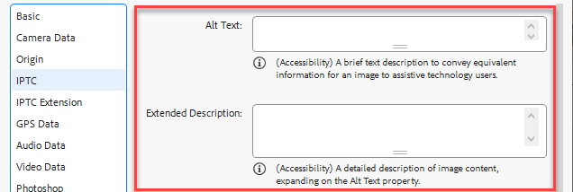
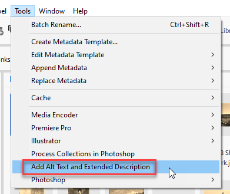
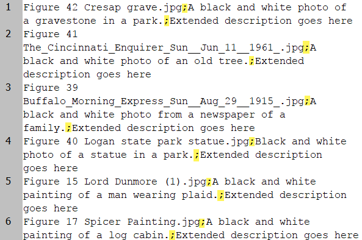
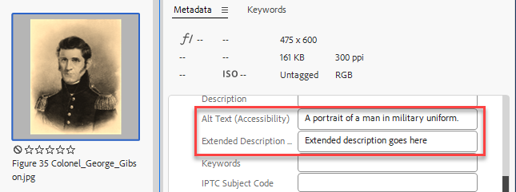

Add metadata to Alt Text and Extended Description (Accessibility) fields
These are two new metadata fields that appeared in version 2024 so this script is for Bridge 2024 and above.

Recently, I was asked to write a script that inserts data into these fields reading them from a CSV file.
This is a two-step process: first, in Bridge, metadata are added to images, then, in InDesign, Alt Text Sources are inserted into the containers of images with the Add Alt Text Source from XMP Alt Text / Extended Description (Accessibility) script, using either the Alt Text (Accessibility) or the Extended Description (Accessibility) field.
After installing the Add AltText ExtDescr - Bridge script, a new menu appears.

When the user selects it, the script asks to choose a CSV file. This should be a semicolon delimited file with three columns:
- File name
- Alt Text
- Extended Description

The script processes the files in the current window: if the file name is found in the CSV file, the metadata are added to the file.

Click here to download the script.
For the next step, check out the Add Alt Text Source from XMP Alt Text / Extended Description (Accessibility) script.